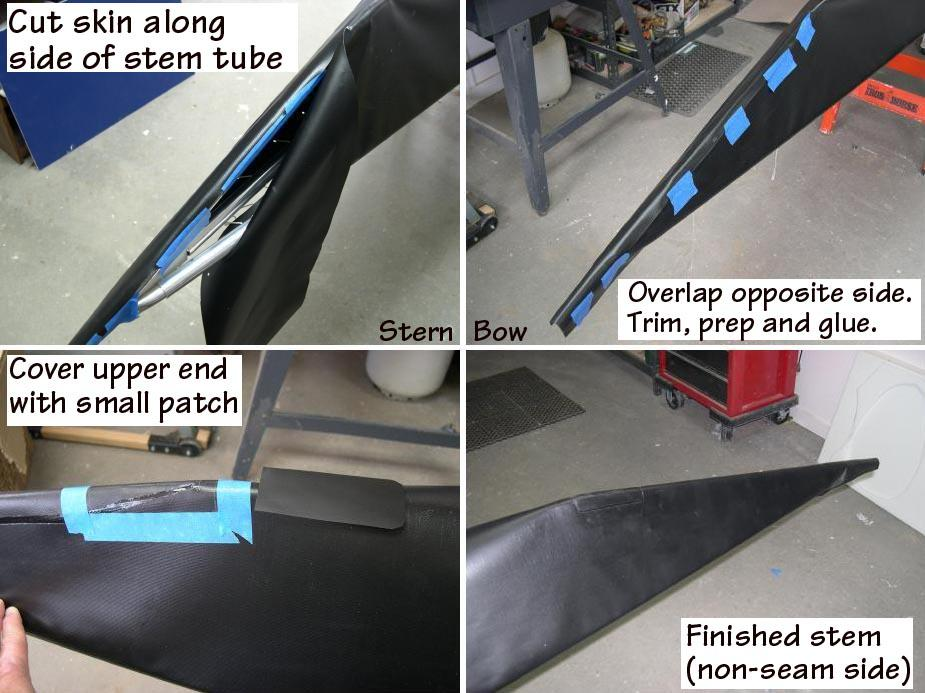

| Covering The Stems - Overlap Method ( Alternative ) | Menu Previous Page Next Page |
|

Stems - A alternative method of covering the stems uses no rub strip. Instead, cut the skin along the stem tube and overlap the two sides. Trim the overlapping side, prep, and glue. At the beginning of the overlap ( keel to stem bend ), the initial narrow glued area can be covered with a small strip of PVC to insure that the overlap is waterproof.
|
|